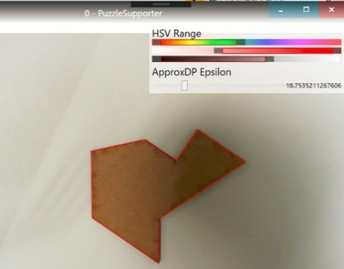
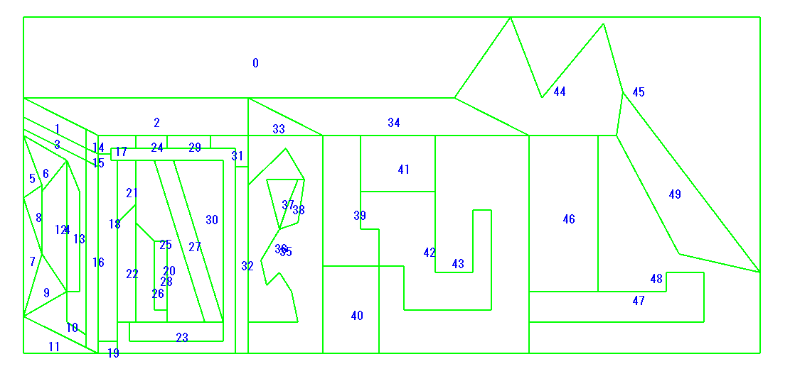
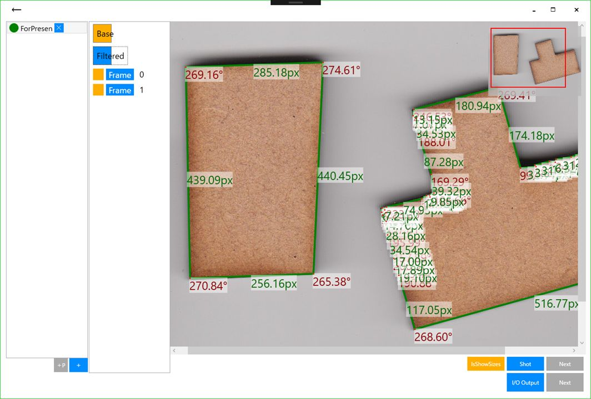

opencvでタグ付けされた作ったもの

2017-10-15
OSC Shimane展示
中国山地のパズドラゴン
csharp, wpf, win32, opencv, imaging, ai, talk, kosen-procon

2017-10-08
高専プロコン2017競技部門
中国山地のパズドラゴン
csharp, wpf, win32, opencv, kosen-procon

2017-03-13
コンピュータフェスティバル2017
そんなパズルは壊してしまえ
csharp, wpf, win32, opencv, imaging, ai, kosen-procon
2016-10-08
高専プロコン2016人力部門
そんなパズルは壊してしまえ
csharp, wpf, win32, opencv, imaging, ai, kosen-procon
2014-01-02
R18画像検出器
csharp, wpf, win32, opencv, imaging